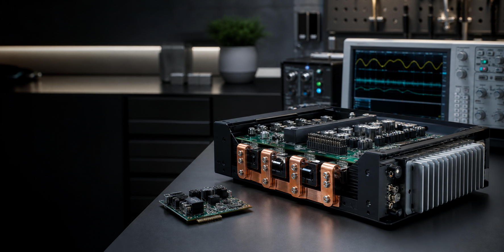

宽禁带动态测试 WBG Dynamic Test
围绕 SiC / GaN 开关瞬态，进行电压、电流、时序、过冲、振铃和并联均流测试。 Voltage, current, timing, overshoot, ringing, and current-sharing tests for SiC / GaN switching transients.

WBG Dynamic Test · HV High-Speed Measurement · Power Electronics
专注 SiC / GaN 等宽禁带器件动态测试、电压电流高速测量、隔离探头与电流互感器装配，以及高隔离度电源和大功率电机驱动器设计。 Focused on WBG device dynamic testing, high-voltage high-speed voltage/current measurement, isolated probes, current transformers, isolated power supplies, and high-power motor drives.
Profile / 关于
我是 Zhouyi Hui，来自南京航空航天大学，主要擅长宽禁带器件的动态测试与高压高速测量。我的工作覆盖测试装配制造维修、隔离供电、功率驱动器设计和复杂瞬态问题定位。 I work on WBG device dynamic testing and high-voltage high-speed measurement, with hands-on experience in probe assemblies, isolated power, power drivers, and transient debugging.
围绕 SiC / GaN 开关瞬态，进行电压、电流、时序、过冲、振铃和并联均流测试。 Voltage, current, timing, overshoot, ringing, and current-sharing tests for SiC / GaN switching transients.
可制造、维修光隔离探头、高压差分探头、高带宽有源电压探头、高阻无源探头和电流互感器。 Build and repair optical isolated probes, HV differential probes, active voltage probes, high-impedance passive probes, and current transformers.
擅长高隔离度电源、大功率电机驱动器设计，并关注宽禁带器件并联均流与可靠驱动。 High-isolation power supplies, high-power motor drives, WBG device paralleling, current sharing, and reliable gate driving.
Technical Scope / 技术能力矩阵
Device Under Test / 被测对象
面向宽禁带功率器件与并联器件，关注开关瞬态、器件一致性和动态均流表现。 SiC, GaN, WBG power devices, and paralleled devices with emphasis on switching behavior and current sharing.
Measurement Chain / 测量链路
关注过冲、振铃、开关损耗和高速测量可信度，避免把测量链路误差误判为器件特性。 Voltage/current capture, dv/dt, di/dt, overshoot, ringing, switching loss, and measurement integrity.
Probe & Fixture / 探头与夹具
制造和维护光隔离探头、高压差分探头、高带宽有源/无源探头和电流互感器等测试装配。 Optical isolated probes, HV differential probes, active/passive high-bandwidth probes, and current transformers.
Power Systems / 电源与驱动
覆盖高隔离度电源、大功率电机驱动器、宽禁带器件并联均流和可靠驱动设计。 High-isolation power supplies, high-power motor drives, WBG paralleling, current sharing, and reliable drive design.
Selected Work / 代表项目
面向 SiC / GaN 器件开关特性，搭建高压高速测试链路，进行电压、电流与瞬态波形捕获。 A high-voltage high-speed test setup for capturing switching waveforms and validating WBG device behavior.
根据测试目标制造和维修多类测量装配，提升高压、高共模、高带宽测试场景下的可用性。 Custom and repairable measurement assemblies for high-voltage, high-common-mode, and high-bandwidth test environments.
进行高隔离度供电与大功率电机驱动器设计，关注宽禁带器件驱动、保护和并联均流。 Design of isolated power supplies and high-power motor drives, with emphasis on gate driving, protection, and current sharing.
Contact / 联系